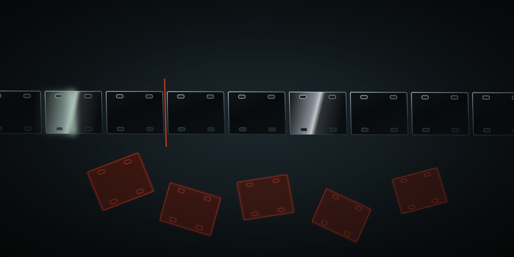

It never watches your footage. It reads it.
Drop raw takes in a folder. Chat with Claude Code. Get final.mp4 back. Talking heads, montages, tutorials, travel, interviews — no presets, no menus.
Set up https://github.com/browser-use/video-use for me. Read install.md first to install this repo, wire up ffmpeg, register the skill with whichever agent you're running under, and set up the ElevenLabs API key — ask me to paste it when you need it. Then read SKILL.md for daily usage, and always read helpers/ because that's where the editing scripts live. After install, don't transcribe anything on your own — just tell me it's ready and wait for me to drop footage into a folder.
The agent handles the clone, the dependencies, ffmpeg, skill registration, and asks once for your ElevenLabs key. Then you point it at a folder of takes and say what you want.
Two layers, and only two.
A language model cannot afford to look at 30,000 frames, and it does not need to. Everything a cut decision requires is already in the audio — where the words start, where they stop, who said them, and how long the silence ran.
Layer one. The transcript, always loaded.
One ElevenLabs Scribe call per source returns word-level timestamps, speaker diarization and audio events — (laughter), (applause), (sigh). Every take packs down into a single file of about twelve kilobytes. That file is the reading surface. Nothing else is loaded by default.
Layer two. The composite, on demand.
timeline_view builds a filmstrip, a speaker track, a waveform and word labels for any time range you name. It gets called at decision points — an ambiguous pause, two takes worth comparing, a cut point that needs a second opinion. It is not a scan tool.

The naive way does not fit on this page.
Drawn at one pixel. At true scale against the rule above it, that mark is 0.08 px wide — narrower than the screen can render, which is the entire argument.
Thirty thousand frames at fifteen hundred tokens each is forty-five million tokens of noise. Twelve kilobytes of text and a handful of PNGs is the same video, read instead of watched. Same idea as handing a model a structured DOM instead of a screenshot — but for footage.
Watch the dead air come out.

Cuts snap to word boundaries taken from the transcript, never inside a word. Every edge gets thirty to two hundred milliseconds of padding, because Scribe timestamps drift by fifty to a hundred. Every boundary gets a thirty-millisecond audio fade, so you never hear the join.
What comes out, and what stays in.
project.md, so next week picks up where you stopped.Twelve rules that are not taste.
Everything else in the skill is a worked example you are free to ignore. These are the ones where deviation produces a silent failure — output that renders clean and is wrong.
- Subtitles are applied last in the filter chain, after every overlay. Otherwise overlays hide captions and nothing errors.
- Per-segment extract, then lossless concat. Not a single-pass filtergraph, or you double-encode every segment the moment an overlay lands.
- Thirty-millisecond audio fades at every segment boundary. Otherwise there is an audible pop at every cut.
- Never cut inside a word. Every edge snaps to a word boundary from the transcript.
- Strategy confirmation before execution. The cut is not touched until you have approved the plan in plain English.
The other seven are in SKILL.md, with the reasoning for each.